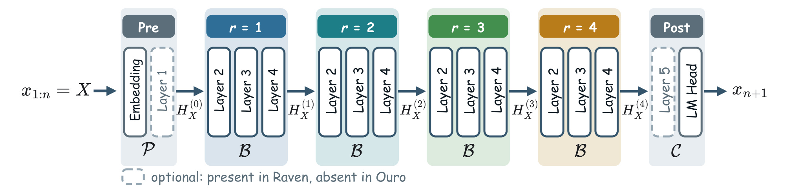
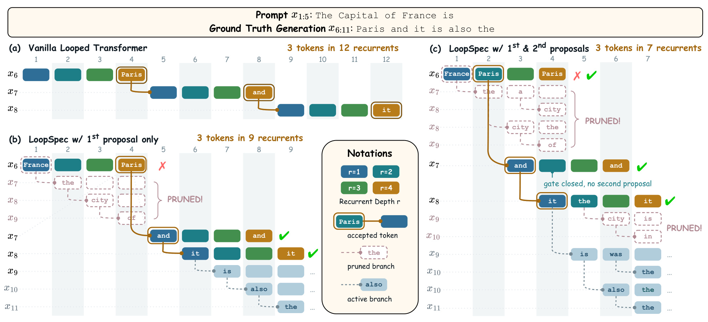
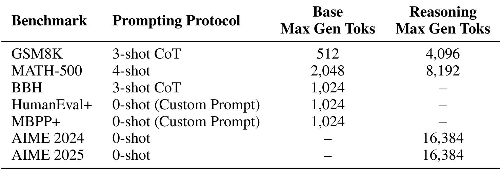
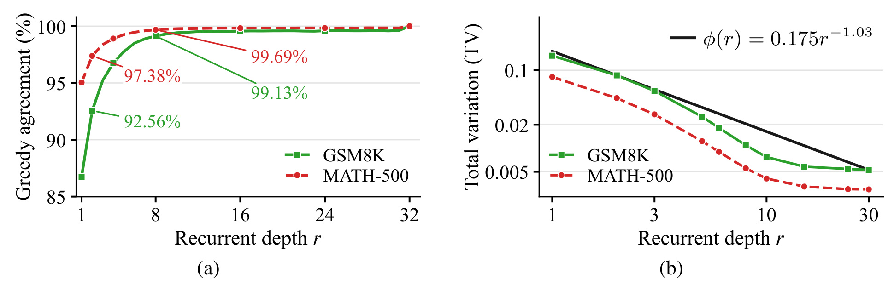
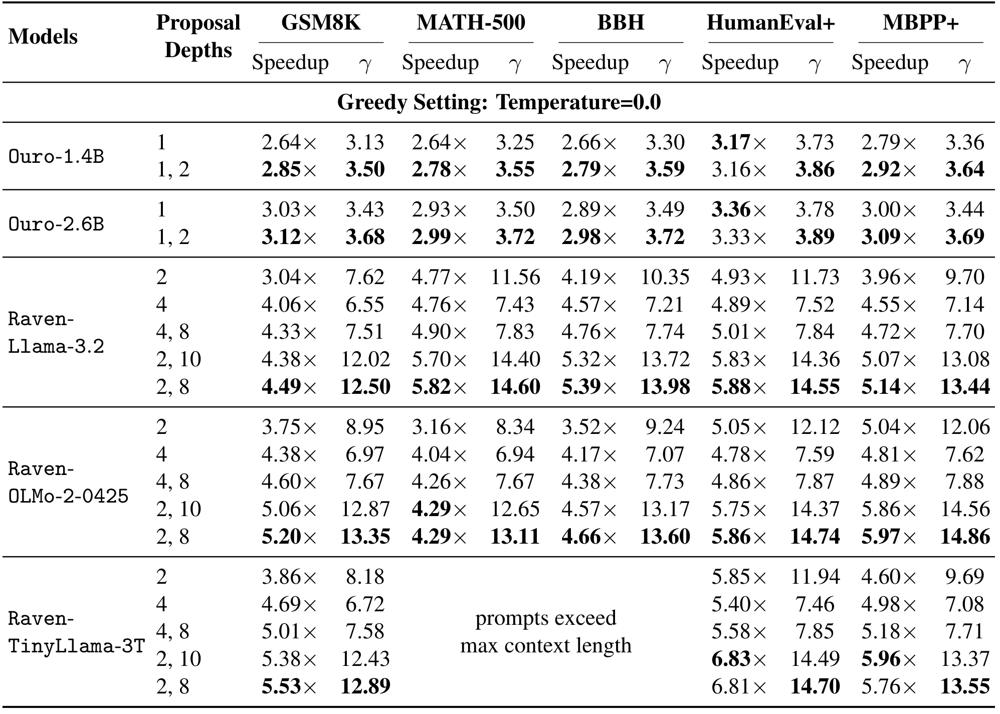
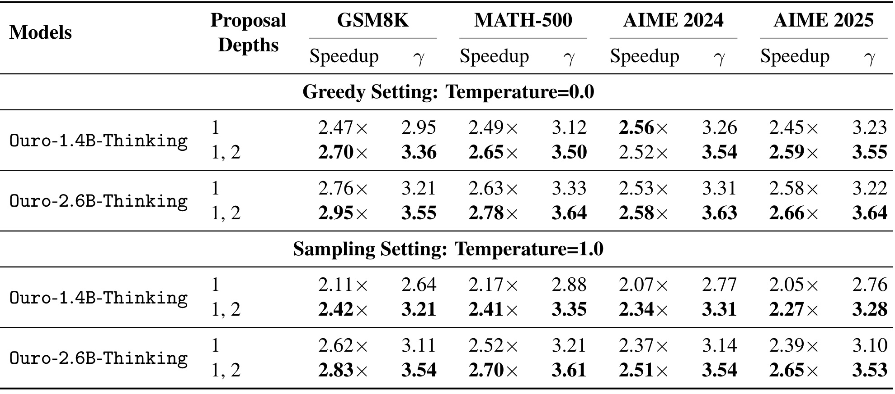
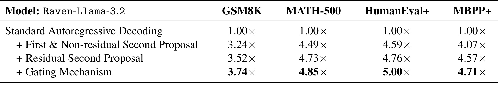
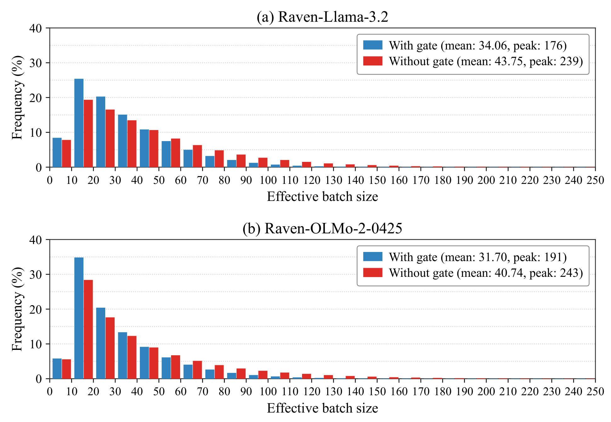
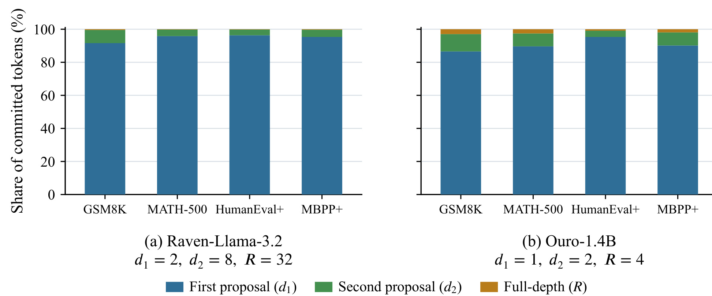
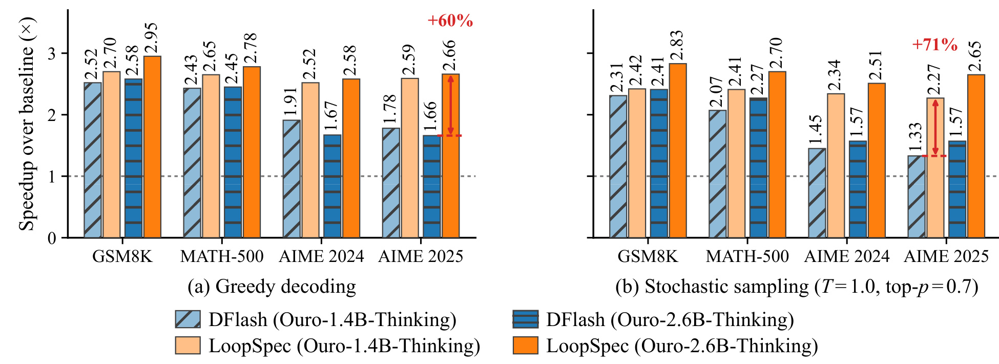

LoopSpec：面向循环 Transformer 的流水线自投机解码
LoopSpec: Pipelined Self-Speculative Decoding for Looped Transformers 研究如何复用循环模型自身的中间预测，在不额外训练草稿模型的情况下缩短解码时间。作者为 SangLyul Cho、Langqing Cui、Sehoon Kim、Dongsu Han 和 Insu Han；第一作者主机构是首尔国立大学，合作机构为 KAIST，前两位作者为共同一作。论文于 2026 年 9 月 15 日公开，本文依据 arXiv v1 全文及附录。唯一论文入口为 arXiv:2609.17184；官方项目页 可访问，论文所列 GitHub 代码入口在 2026 年 9 月 17 日本轮核验返回 404，不能写成代码已经公开可复现。
循环 Transformer 通过反复调用共享模块压缩参数量，却需要在每个循环深度重复访问权重，使解码延迟高于参数规模相近的普通模型。独立草稿模型又引入训练成本、分布失配和额外内存，而循环模型的早期状态本身已经能够提供草稿预测。
1. 背景和问题
循环 Transformer 把“存储多少参数”和“执行多深计算”部分解耦。普通解码器有许多各自独立的层，循环模型则把同一组块多次应用于隐状态：保存四个块、反复执行八次，可以获得三十二次块处理的有效计算深度。这个例子说明的是权重共享方式，而不是宣称两种模型函数等价。共享参数能够降低模型驻留的存储需求，并允许模型通过额外循环改进推理表示，但每次循环仍然需要矩阵运算、注意力及相应状态管理。参数小并不自动代表单个 token 生成快，这正是本文问题的起点。
自回归生成还叠加了跨 token 的依赖。标准做法必须为当前位置跑完全部循环，确定下一个 token，然后把它接到前缀上，才能启动后一个位置。若模型需要三十二个循环，一个位置较早形成的可靠判断只能等待剩余计算结束。本文关心的是如何利用这段等待窗口，让未来位置的计算提前发生。它没有要求减少最终目标分布的循环深度，也没有把“模型已经大致知道答案”当成可以直接输出的充分条件；完整深度仍是裁定结果的依据。
传统投机解码用便宜的草稿模型提前提出 token，再由目标模型验证。它的吸引力在于，只要验证和拒绝后的修正采样正确，速度优化不必以改变目标分布为代价。但对已经依赖循环复用的小参数模型，引入另一套草稿权重有两个不理想之处：需要维护新的训练与部署对象，同时草稿和目标的预测不一定匹配。即使草稿在最终答案层面能力接近，在逐 token 条件分布上偏离仍会造成拒绝，拒绝之后提前算出的后续内容被丢弃。这些开销都会消耗原本希望从小模型架构获得的优势。
自投机解码把草稿来源换成目标模型的部分计算，例如跳过若干层或读取中间层。循环模型具有特别自然的读取点：同一模块经过不同次数迭代后产生一系列逐步细化的状态，读取头可以从较浅循环深度取得预测。本文先验证这些中间预测和最终预测的接近程度，再把它们接入流水线。这里的重要区别是，提前启动下一个位置时，当前位置仍继续加深；两者调用的是同一组共享块，因此可以合并到一次批量执行中。它利用了架构已有的权重共享，而不是把一般的层跳跃方案直接套过来。
然而，早读并不总是好。第一提案越早，后续分支就越早启动，理论上隐藏掉的等待越多；与此同时，预测还没有充分细化，发生拒绝的概率也可能上升。如果某个浅层草稿错误，依赖它的所有后续分支都失去合法前缀，不能因为已经花费计算就继续保留。单提案流水线于是出现一种脆弱性：顺利接受时很快，遇到拒绝时就清空大量进度。只把读取深度调晚可以减少拒绝，却又缩短了可并行重叠的窗口。这是本文第二提案机制真正要调和的矛盾。
作者提出在更深处再生成一个替代提案，为第一条分支可能失败时准备另一条已推进的路径。直觉上像给流水线准备备用出口，但备用路径本身会继续生出分支，若所有位置无条件创建两个候选，活跃分支会迅速增多。因而“候选更多”同时带来更高恢复概率与更重硬件负载。LoopSpec 的贡献由两个配套选择构成：第二提案来自相对第一提案的残差分布，让备用候选更有针对性；是否创建备用分支由更深读出对第一候选的信心变化决定，避免无差别扩张。
“无损”需要拆开理解。贪心生成要求提交的 token 与完整模型的最大概率选择一致；随机采样要求最终提交服从同一个目标分布，并不要求使用同一随机种子时字符串逐字符相同。温度、top-p 过滤、归一化都属于定义目标分布的一部分。若工程实现把浅层候选直接当作最终输出，或拒绝后仍从未经修正的分布抽样，就不再是本文的算法。本文证明支持的是正确拒绝采样机制下的分布保持，不意味着量化误差、缓存实现错误或不同停止规则可以被忽略。
这项工作与大模型服务的关系很直接：长链推理会生成大量 token，解码阶段重复计算的减少可能显著改善用户等待。但它与普通大模型的关系仍有架构前提，不能把实验倍数复制到任何未共享块的模型上。对生成式推荐、解释生成或循环式候选生成器，值得关注的是提前预测和最终校验之间的调度机会；对于一次前向输出分数的常规排序器，本文并没有给出直接加速算法。迁移前首先需要确认系统是否真的有可共享的循环块和足够可靠的中间读出。
阅读本文还应始终区分三个层面：模型逐 token 分布是否保持、串行循环步数是否减少、真实墙钟时间是否缩短。第一项靠采样论证和实现正确性，第二项靠接受率与流水线调度，第三项还受前后处理、活跃分支、算子后端和硬件瓶颈影响。后文会出现平均接受长度很高、但实际加速远低于该数值的情况，这不是表格矛盾，而是提醒我们不要用一个抽象指标替代整个服务成本。作者在单请求设置中评估解码，尚未证明同样结论在高并发吞吐或端到端首包延迟上成立。
从研究定位上，它也与动态提前退出不同。提前退出通常决定当前位置少算几层，因而需要讨论质量损失或深度路由；本文保留目标的完整循环，只是将别的位置提前插入同一执行窗口。它也不通过增加输出长度或改变提示来获得速度改善。因而实验的合理比较对象应是相同检查点、相同提示与解码条件下的标准生成，不能选择能力更弱但更快的另一模型作唯一参照。这种问题定义使论文的速度收益更易解释，同时限定了它无法独立解决的模型能力问题。
2. 方法
2.1 循环模型与中间读出
论文先把模型抽象成前置模块、循环模块和后置模块。输入是当前前缀，循环模块反复更新同一个位置的状态；后置模块将状态转换为词表概率。原文式一可写为：
符号解释：$X$ 是 token 前缀，$H_X^{(r)}$ 是第 $r$ 次循环后的隐状态，$\mathcal P$、$\mathcal B$、$\mathcal C$ 分别是前置、共享循环和后置模块，$R$ 是完整循环深度，$p_R$ 是目标分布。$\mathcal C$ 包含温度缩放、可选截断和归一化，因此中间读出必须应用与目标相容的采样处理。它没有新增训练损失；本文使用既有检查点，只修改推理调度。若一个模型的中间状态不能经现有后置模块形成有效草稿，本文收益的经验前提就不成立。

Figure 2 把一次目标计算画成从输入前缀到下一个 token 的连续路径。中间四个不同颜色区间表示同一组层在不同循环深度上的执行，而不是四套不同权重。左侧先完成嵌入等前置处理，右侧后置处理才得到用于选词的概率。图中虚线框表示不同模型家族的差异：Ouro 的前后模块主要是嵌入与语言模型头，Raven 还包含额外 Transformer 层。这个差异直接影响后面的速度解释，因为每产生一个提案都要读出，每启动一个分支都可能需要前置计算，不能把这些成本视为永远免费。图中箭头还表明，虽然计算块共享，同一个前缀经过不同深度时的状态并不相同；共享权重不等于共享隐状态，更不等于能够把不同循环深度的 KV 缓存混在一起。
提前提案相当于从这条路径中途接出一个读出，并让完整路径继续走向右侧。模型参数没有被改写，也没有先验保证越深每个位置都更准确；作者依赖的是跨位置统计上的接近趋势。中间预测好坏会影响接受率和速度，但只要最终仍由正确的目标分布验证，就不会把草稿误差直接变成输出分布误差。反过来说，无损保证本身也不保证高效率：非常差的中间预测仍可以被安全拒绝，只是会制造很多无法使用的计算。 因此模型家族之间的差别不只在循环次数。若前后模块很重，即使共享块调用能够完全合批，频繁读取中间分布仍然重复执行后置网络；新增子分支还会走一次前置网络。图中的虚线层使这些调用具有真实计算量，正好解释后续为何某些更早提案配置获得较大的平均接受长度，却没有最快的实际运行时间。
2.2 单提案流水线与拒绝采样
一条分支对应一个确定前缀及其当前循环深度。预填充并提交第一个 token 后，所有活跃分支一起推进共享块；到达浅层深度 $d_1$ 时读出 $q_1=p_{d_1}$，采样第一个候选并立刻初始化以该候选扩展前缀的子分支。父分支不暂停，它继续走到 $R$ 完成验证。为了正确处理拒绝，先定义原文式二的残差算子：
符号解释：$\mu$、$\nu$ 是词表 $\mathcal V$ 上的分布，$v$、$u$ 是 token，正部只保留目标相对提案缺少的概率质量。分母为零时两个分布相同，拒绝事件概率为零，不应强行计算未定义的残差。这个算子不是简单删除某个 token，而是逐词重分配概率。原文式三、四的单候选规则为：
符号解释：$q$ 是草稿分布，$p$ 是目标分布，$a$ 是接受概率，$\widetilde x$ 为候选，$x$ 为最终提交。接受与残差重采样的混合恰好恢复目标分布。候选来自 $q$ 的支撑，因此实际抽到的位置不会有零提案概率；实现仍需处理数值稳定。若接受，保留已提前推进的子分支；若拒绝，剪掉所有依赖错误前缀的后代，并从正确新前缀重新开始。

Figure 1 的横向每一列表示一次批量循环推进，纵向行表示不同前缀的分支。标准生成要依次完成三个 token 的四次循环，共十二步；只在第一层提案的流水线示例缩短到九步。它先猜出 France，于是提前计算以 France 为前缀的后续词，但完整深度确认应当是 Paris，相关子树全部被剪掉。这里的损失不只是一枚错误候选，还包括基于错误候选继续推测的后代。之后 and 和 it 被接受，已经完成的子分支进度被保留，体现了流水线重叠的收益。图右再加入第二层提案，Paris 的备用分支提前启动，在第一提案失败时仍能保住这部分进度，三个 token 只需七次循环推进。
这个例子展示调度，不是独立的性能基准，也不表示每条输入都能获得十二比七的时间加速。同列中分支越多，一次批量前向的计算和状态管理越重；图中统计的是推进次数而非 GPU 耗时。被接受的分支也不是直接跳过完整深度验证，它只是把下一位置需要的部分工作提前做完。连续接受时，提交间隔趋向 $d_1$；发生无备用路径的拒绝时，需要重新等待完整深度。阅读图中多个同样的词时还要检查其前缀，词面相同不代表缓存或分支状态可直接合并。算法保留的是某条合法前缀路径上的计算，而非任意名字相同的 token。 右图里 and 的备用门保持关闭，也是理解双提案流程的重要细节：系统并不保证每一行都有两个候选。更深状态继续支持已有草稿时，第二条分支从未创建，因此之后也没有相应的缓存需要释放。it 一行则存在被剪掉的 the 子树。图中接受与剪枝交替出现，说明流水线是随着验证结果动态重定根，而非一次构造固定树后统一计算完毕。
2.3 残差第二提案与门控
第二提案只在第一提案失败后使用，因此它应接近“第一提案被拒后的目标分布”，而不是重复从原始深层分布随便取一个候选。原文式五和式六给出提案与创建条件：
符号解释：$d_1<d_2<R$ 是两个提案深度，$q_2$ 是残差第二提案，$\widetilde x^{(1)}$ 是已经抽出的第一候选。门控判断更深状态是否降低了第一候选的概率。降低时才生成备用子分支，增加时或持平时不生成。贪心情形可以理解成深层最大值是否改变；随机采样则必须使用概率比较，不能把它简单替换为两个最大词不同。第二提案针对第一提案留下的概率缺口，门控针对备用分支带来的计算负载，两者解决不同问题。 完整深度到达后先验证第一候选；失败时，目标已经变成 $\rho_1=p_R\ominus q_1$，第二候选的接受率必须按这个目标计算。二次失败时再从二次残差抽取。原文级联过程可以合并表示为：
符号解释：$\rho_1$ 是第一次拒绝后的剩余目标概率，$a_2$ 是第二候选接受率。门关闭而第一候选失败时，直接从 $\rho_1$ 采样即可。接受哪一条，就保留它和它的后代，其余路径剪枝；两条都不接受才重启。不能拿第二候选再次对原始 $p_R$ 做验收，否则忽略了前次拒绝的条件，破坏分布校正。附录证明说明不带门控的双拒绝概率至多是深层读出到目标的 TV 距离，带门控后界增至其两倍；这是概率上界，不是实际拒绝率恰好等于它。
2.4 深度选择与实现代价
理论部分把中间分布误差用经验幂律上包络约束，并据此控制平均提交成本。原文式七及附录式十一为：
符号解释：$X$ 来自固定前缀分布，$\alpha,\beta>0$ 是拟合参数，TV 衡量两个分布总变差，$C$ 是提交一个 token 所需的串行循环步数。右侧三项分别对应第一提案的基本间隔、第一失败后等待第二的代价上界和最终重启的代价上界。它忽略前后模块及批量大小造成的每步耗时变化，因此优化的是循环步数代理，不能直接证明墙钟时间最优。对该连续上界求驻点，原文式八得到：
符号解释：$D$ 是为了简化记号的指数分母，星号表示连续解。公式需满足原文对 $R$ 的充分条件及 $1\le d_1^*<d_2^*<R$；实际实现还要求 $d_2$ 与 $R$ 为 $d_1$ 的整数倍。因此该解提供搜索起点而不是可直接执行的任意小数配置。Raven-Llama 的参数给出约 $(1.26,8.85)$，论文实测的较优离散选择是 $(2,8)$，这种接近是有限设置的经验支持，不能推广成对所有硬件的闭式最优定理。
系统实现补上抽象公式省略的工作。每条分支、每个循环深度都要独立维护 KV 状态；新分支通过复制父前缀的缓存索引复用已有内容，而不是复制全部 KV 张量。剪枝时只释放剩余路径不再需要的状态，Raven 的前后模块也需要相应缓存。动态分支数又会改变批量形状，作者为可支持的批量分别准备 CUDA Graph，并在不同批量间保存、恢复分支隐状态；图中同时包含缓存分配和索引更新以减少额外启动。这说明免训练不等于免工程，若只实现数学采样却每步重新分配缓存、逐分支启动算子，很可能无法重现实测收益。
3. 实验结果
3.1 评测设置和中间预测依据
全部实验在单张 NVIDIA RTX PRO 6000 Blackwell 上使用 BF16、Triton 注意力后端和 FlashInfer TinyGEMM，系统基于 SGLang，并接入 lm-evaluation-harness。这里的单批量设置指请求层面，内部投机分支仍然形成有效批量。模型包括 Ouro 两个基础版本、两个 Thinking 版本和三个 Raven 基础检查点，共七个；Ouro 完整循环深度为四，Raven 为三十二。主要对照是相同目标模型的标准自回归解码，另外训练 DFlash 草稿进行比较。墙钟加速只计算预填充结束到生成结束的解码阶段，不能当成请求总耗时减少相同比例。

Table 5 将任务协议与模型类别并列列出，避免把同名数据集下的不同生成负担混为一谈。GSM8K 使用三样本思维链提示，基础模型最多生成五百一十二 token，思考模型则允许四千零九十六；MATH-500 为四样本提示，对应两千零四十八和八千一百九十二。BBH 的三样本思维链、HumanEval+ 与 MBPP+ 的零样本自定义代码提示只在基础模型组出现，三者上限都是一千零二十四。AIME 两个年份使用零样本，只在思考组出现，最大生成长度是一万六千三百八十四。横杠表示没有这一组实验，不是性能为零，也不是模型在该任务上失败。生成预算差异意味着长链任务更容易体现解码优化的累积效果，但也会改变截止截断的风险。
具体检查点在附录 Table 4 中列明：Ouro 使用 ByteDance 的 1.4B、2.6B 及对应 Thinking 发布版本，Raven 使用 smcleish 的 Llama-3.2、OLMo-2-0425 与 TinyLlama-3T 循环训练版本。复现不能只按近似参数量找替代模型，因为中间读出质量依赖循环训练所得状态。思考模型开启相应聊天模板和 thinking 模式，代码题要求输出 Markdown 代码块内的完整 Python 脚本。上述协议为解释速度服务，没有单独证明任务难度、模型答案正确率或真实线上请求分布都等价。尤其不能把基准里的生成预算误当成实际平均输出长度，论文速度是测得的总体解码表现，不是由最大长度直接相除得到。
不同任务的提示样本数也不能随意更换。代码任务使用自定义提示而不是思考模板，数学任务使用的示例会改变前缀长度及模型生成风格。这些差异不仅影响答案质量，也可能改变浅层预测和最终预测的一致性。因此重现实验时，应同时保存完整提示、停止词、聊天模板和采样参数；只有模型名字相同不足以保证可比的候选分布或时延。

Figure 3 左侧在 Raven-Llama-3.2 上比较不同深度的最大概率 token 与最终深度的吻合率，GSM8K 在深度一已超过百分之八十六，深度八超过百分之九十九；MATH-500 也表现出随深度加深而接近目标的趋势。纵轴是逐位置一致性，绝不是数学题最终答对率。右侧改看温度一点零、top-p 为零点七时的总变差，统计十个深度并按 token 位置平均，然后用幂律曲线构造经验上包络。两种测量分别解释贪心和采样下为什么早期读出可以成为草稿，但不能互相替代：最大词一致不代表所有词概率相同，采样接受率需要完整分布差异。
黑色包络的参数为 $\beta=0.175$、$\alpha=1.03$，这正是深度选择公式的输入。附录对 Raven-OLMo 给出另一组 $0.207$ 和 $1.08$，连续深度约为 $(1.41,9.17)$，同样接近实验选用的 $(2,8)$。证据支持“可以用少量测量缩小搜索范围”，尚不足以证明这种幂律在所有任务及提示分布下稳定。实际部署若温度、top-p 或前缀类型改变，TV 曲线可能随之变化；而曲线越接近只是在概率上降低重启风险，并没有计入每次中间读出的后置层成本。因此图中早期质量已经很高，也仍需要接下来的墙钟实测决定配置，而不是直接选择最早一层。
作者把 TV 解释为标准拒绝采样的拒绝概率，这建立了观察曲线与理论代价之间的桥梁。不过图中数据是多个位置平均，困难位置可能集中成连续片段。若连续拒绝造成反复清空流水线，其瞬时体验会比平均接受率呈现得更差。因此未来测量还应保留位置级轨迹，判断拒绝是均匀散布，还是集中在推理转折、代码语法边界或特殊 token 上；本文尚未展示这些细分结果。
3.2 基础模型：峰值、普遍收益和反例

Table 1 给出五个基础检查点的不同提案深度，所有结果使用贪心解码。摘要的最高六点八三倍明确来自 Raven-TinyLlama-3T 在 HumanEval+、深度组合 $(2,10)$ 的一格；同一模型 $(2,8)$ 是六点八一倍。它不是跨任务平均，不是所有模型都达到的增益，也不是生成准确率提升。该检查点在 MATH-500 与 BBH 的提示超过上下文上限，表中留有说明，不能把缺失格补成成功实验。Raven-Llama 的 $(2,8)$ 在五项任务上分别达到四点四九、五点八二、五点三九、五点八八和五点一四倍；Raven-OLMo 相应为五点二零、四点二九、四点六六、五点八六和五点九七倍，说明深循环家族确实有较大流水线空间。
Ouro 的完整循环只有四步，可隐藏的串行深度更少，收益通常在二到三倍附近。还应看到第二提案不是每格更快：Ouro-1.4B 的 HumanEval+ 从单提案三点一七倍变成双提案三点一六倍；Ouro-2.6B 对应从三点三六变成三点三三，但平均接受长度都上升。双提案增加的读出、分支初始化与管理开销，在这些位置超过了少量接受率改善。作者以每个模型、每项任务分别挑选加速和接受长度的最大值，因此两个粗体未必对应同一个配置。这个设计本身就说明评价不能把二者绑成同一胜负标准。相比只摘取最大值，更值得复现的是不同深度下速度与接受长度的曲线，以及是否存在对任务不敏感的配置。
表中也能看到离散深度选择因任务而异。TinyLlama 的 GSM8K 在二、八组合更快，HumanEval+ 却在二、十组合稍快；相同第一深度下，第二深度后移提高草稿质量的收益必须与备用分支少算的进度相权衡。因此把某一组合称为全局最佳并不准确，实际更合适的说法是在论文选定任务和搜索范围内表现较好。
原文式九定义的平均接受长度为：
符号解释：$N_{\mathrm{decode}}$ 是输出 token 数，两个接受计数分别表示由第一、第二提案提交的 token 数；分母按相应间隔累计串行循环代价。$\gamma$ 是以完整深度执行为单位的归一化产出，不等于实测速度倍数。例如 Raven-Llama 的 GSM8K 单提案深度二给出 $\gamma=7.62$、速度三点零四倍，深度四却是 $\gamma=6.55$、速度四点零六倍。后者串行步数代理更差而墙钟更好，原因可以由前后模块与分支数量的额外成本解释。这个反例也限定了理论结论：闭式解优化的代理目标有用，但工程决策仍需真正计时。
3.3 思考模型：随机采样仍可加速

Table 2 上半部是温度为零的贪心，下半部是温度一点零且 top-p 为零点七的随机采样，两块不能直接混成一条模型能力排名。贪心时，Ouro-2.6B-Thinking 的双提案在 GSM8K 达到二点九五倍，是本表峰值；MATH-500、AIME 2024、AIME 2025 分别为二点七八、二点五八和二点六六倍。采样时同一个模型对应二点八三、二点七零、二点五一和二点六五倍。说明中间候选不只在最大词一致的简单制度下可用，在概率校正后的长链推理中也能保持有意义的速度收益。这里所谓保持无损来自算法分布性质，不能从这些速度数字单独推导“所有答案逐字相同”。
第二提案在采样组的改善更一致。以两点六 B 的 GSM8K 为例，单提案的 $\gamma$ 为三点一一、速度二点六二，双提案升至三点五四与二点八三；一点四 B 对应速度从二点一一升到二点四二。残差备用能够找回部分被第一提案遗漏的概率质量，使采样带来的拒绝不必一律重启。反例仍存在于贪心组：一点四 B 的 AIME 2024，单提案二点五六倍而双提案二点五二倍，尽管接受长度从三点二六增加到三点五四。由此不能给出“复杂任务就必须双提案”的规则；任务产生的 token 分布、循环深度及算子成本共同决定收益。更稳妥的部署方式是在固定模型和服务负载上把两种配置都纳入验证，记录平均值及尾部时延，而不凭思维链长度选择。
这些测量还保留了完整目标模型的思考行为，并没有把生成推理链缩短为另一种提示。因此可以把差异主要归因于解码实现，而不是把更短回答混入速度增益。不过论文没有在表里提供每题耗时分布或置信区间，接近的两格数字应谨慎解释；特别是百分之一量级的小差异，需要独立重复计时才能判断是否稳定。
3.4 残差和门控分别贡献了什么

Table 3 在 Raven-Llama-3.2 的采样制度下固定提案深度二和八，逐步更换第二提案构造与门控。非残差的双提案在四项任务上的加速为三点二四、四点四九、四点五九和四点零七倍；换成残差后为三点五二、四点七三、四点七六和四点五七；再增加门控后为三点七四、四点八五、五点零零和四点七一。四列在两个步骤上都增加，因此这组实验分别支持残差的针对性和门控的负载控制，而不只是“两个候选比一个多”的直觉。它没有把完整方法和一种完全不同的训练方法混为同一消融，比较范围更清楚。
消融中作者对无门控版本额外屏蔽第一候选并重新归一化，保证第二个 token 不与第一候选重复；有门控的残差版本无需再屏蔽，因为当更深概率下降时，残差正部在第一候选处已经为零。这个细节影响可比性，不能把表中非残差方案复现成允许大量重复候选的弱基线。另一方面，消融只覆盖一个 Raven 检查点和一种采样参数，尚未证明门控的阈值策略在所有部署条件下最佳。论文门控无需训练，执行简单，但它看的是单个已抽候选的概率变化，不直接观测显存余量或当前队列，未来负载自适应方案仍需要重新验证正确性与收益。
逐步增益还有一个重要含义：仅看有门控的最终行，会把候选分布改善与资源节省混在一起。残差行先说明备用概率应放在哪里，门控行再说明哪些位置值得支付备用计算。复现实验最好保持这一分层顺序，并记录每一步内部批量与第二提案接受次数，否则即使最终速度接近，也无法确定是否实现了作者提出的同一机制。

Figure 5 统计的是每次共享循环前向处理的活跃分支数，而不是同时服务的用户数。蓝色加入门控，红色不加，在 GSM8K 采样设置中，Raven-Llama 的平均有效批量从四十三点七五降到三十四点零六，观测峰值从二百三十九降到一百七十六；Raven-OLMo 的均值从四十点七四降到三十一点七零，峰值从二百四十三降到一百九十一。整个分布向较小批量移动，说明收益并非只消除了某个孤立极值。需要注意“峰值”是这批评测中观察到的最大值，不是形式化的资源上限；即使有门控，偶尔的较大批量仍然存在，部署显存规划不能只按均值计算。
附录 Table 6 进一步给出门打开频率：Raven-Llama 四项任务在百分之十八点七五至二十七点一零之间，Raven-OLMo 在百分之二十点一一至四十点四零之间。这说明多数深层到达事件不需要真正分叉，尤其把昂贵备用分支集中到信心下降的位置。理论示例若总在两处无条件分叉，深度配置二、八、三十二可产生二百四十九条最大分支，能直观解释为什么只增加候选不够。实际系统还要为可能批量预录 CUDA Graph，门控降低平均和峰值负载并不自动消除图缓存或 KV 管理开销。作者呈现了资源代理的改进，但没有由这张图给出峰值显存、能源消耗或大并发服务吞吐结论。
图中横轴按十个分支分箱，纵轴是循环前向次数比例。因此某一柱子的高度并不直接等于该批量占用的总 GPU 时间；大批量的一次执行可能更久。若想估计时间加权负载，需要把每个分箱中的调用数乘以对应耗时。这个区别使有效批量分布成为机制解释，而不是完整性能模型，也避免把门控减少约四分之一分支简单换算成同等比例的速度提升。

Figure 6 把最终提交的 token 分成第一提案、第二提案和完整深度回退三类，在 Raven-Llama 和 Ouro-1.4B 的贪心配置上展示四个任务。Raven 的第一提案占百分之九十一点五九至九十六点三一，第二提案占百分之三点五零至七点九三，最终回退只剩百分之零点一九至零点四八。Ouro 的第一提案占百分之八十六点五七至九十五点三五，第二提案占百分之三点七四至十点四八，回退占百分之零点九零至二点九五。大多数 token 很早就能提出正确候选，备用分支的价值体现在少数第一提案失败的位置，而不是争取成为主要输出来源。
这些比例也解释为什么第二提案份额不高仍能明显改善流水线：一次完整重启会损失后续多个位置已经推进的工作，找回一小部分拒绝可以避免较长停顿。但它们的分母是已提交 token 总数，不是所有创建过的候选，也不是 GPU 上执行过的分支总数。不能把第一提案占比直接称为“所有草稿的接受率”，更不能用第二提案占比直接推算资源开销；被剪枝的子树消耗需要另外统计。该图是贪心设置的机制证据，前一图是采样设置的负载证据，两图相互补充但统计条件不同。对于线上系统，最好同时收集创建数、接受数、剪枝深度和每类事件耗时，才能把正确率优势映射到实际时延收益。
此外，回退比例很小并不表示最终深度可以取消。所有绿色和蓝色部分之所以被接受，仍然经过完整目标验证；黄色只表示没有保住任何预先计算的后续路径。若把图里的完整深度回退误读成只有黄色 token 才跑完整模型，就会高估算法减少的总浮点计算。它主要减少关键路径的串行等待，可能同时执行比标准方案更多的总分支工作。
3.5 与训练式草稿模型的比较

Figure 4 对比相同 Ouro Thinking 目标模型上的 LoopSpec 与 DFlash，左右分别为贪心和随机采样。作者训练五层、块大小十六的 DFlash 草稿，采用 SpecForge 与重新生成答案的 OpenR1-Math-220k，训练一万步、批量三十二，并在推理时统一相关超参数与 SGLang 配置。图中每一根柱子都是相对标准自回归解码的速度倍数，柱间比值才是两种方法彼此的优势。例如贪心 AIME 2025 的两点六 B 模型，LoopSpec 为二点六六、DFlash 为一点六六，约是一点六倍；采样 AIME 2025 的一点四 B 模型为二点二七与一点三三，约一点七一倍。摘要所说最高约一点七倍对应后一种比较口径，不能再乘作对原始解码的额外无条件收益。
在这些基准中，免训练方法能超过专门训练草稿，说明循环模型中间状态与目标的相容性很有价值。但比较仍受到草稿训练配方限制，不能据此判定训练式投机解码一般无效。更大的草稿、不同训练数据、不同硬件或服务并发可能改变结果。本文优势还包括免去草稿训练与额外参数管理，这些属于部署流程收益，图中墙钟指标没有将训练时间摊入分母，不能说它测得了包含训练成本的全生命周期加速。当前代码入口返回四零四，也意味着实现中的采样、缓存剪枝和图捕获细节暂时无法通过公开仓库逐行复核；论文给出的附录伪代码和系统描述足以理解方法，但还不足以把全部实验认定为独立重现。
计时解释还应检查各方法是否使用相同的停止条件。无损采样只保证输出分布一致，不保证两次随机运行恰好生成同样长度的回答。若独立复测要比较微小速度差，最好报告多次运行和输出长度分布，并保持预热、图捕获与正式计时的边界一致；本文柱状图没有提供这些方差信息。
4. 总结
LoopSpec 最有价值的部分是把循环架构中的早期预测、后期验证和共享块批处理连接成一个完整调度方案。浅层提案让下一位置提早计算，残差第二提案保留第一失败后的替代进度，门控控制备用分支扩张，级联拒绝采样保持目标分布。它不需要额外训练目标模型或草稿模型，但需要对服务引擎的分支状态和缓存生命周期作实质修改。论文同时给出概率界、深度选择的代理模型和真实墙钟测量，这三类证据配合起来，比只展示高接受率更有说服力。
对大模型推理研究，一个可迁移的观察是：较深模型内部可能很早就形成足以预测的分布，剩余计算可以承担确认角色。是否值得流水线化要由错误后的恢复成本与分支计算成本共同决定，不能只优化预测正确率。对生成式推荐，可能的切入点是本身采用循环模块的序列候选生成或解释模型，先验证中间读出对合法物品标识的支持度，再考虑概率校正。传统召回、点击率排序以及有约束的业务过滤没有在本文中测试，若最终输出经过额外约束，必须把约束纳入目标分布并重新检查采样程序，不能直接借用“无损”结论。
需要保留至少四项限制。第一，硬件和负载范围较窄：单张 Blackwell、单请求实验不足以预测高并发服务，原有批处理已充分利用硬件时，额外分支可能挤占有效工作。第二，加速统计排除了预填充，长输入短输出场景的端到端收益可能明显小于表格倍数。第三，深度选择依赖经验 TV 包络及固定前缀分布，温度、任务、检查点或上下文改变后都可能需要重新标定。第四，采样证明假设概率与缓存状态正确，浮点误差、动态剪枝和 KV 复用是工程正确性的独立风险，理论不能代替实现测试。第五，公开代码暂不可访问，独立重现、运行版本和完整计时脚本仍有信息缺口。
还要警惕指标层面的外推。六点八三倍是特定 Raven 小模型代码任务的峰值；思考模型的实测峰值约二点九五倍；平均接受长度常常远大于真实速度倍数。第二提案在若干 Ouro 贪心任务上略慢于单提案，不应把“增加备用分支”写成必然收益。这些反例没有否定方法，反而明确了它是一种需要测量与选择的调度策略。若未来工作只提高接受长度，却不记录前后层调用次数、内部批量和实际耗时，就可能沿错误方向优化。
值得单独保留的研究问题是，分支数门控能否与实时负载联合设计。论文当前只使用概率信心，不读取请求队列；加入资源约束可能改善吞吐，也可能损失恢复机会，需要重新建立测量和正确性依据。
后续可以按三个层次跟进。首先等待代码入口恢复，复核附录算法中的残差归一化、门控关闭后的回退和分支重定根过程，验证贪心输出一致，并以分布统计测试随机采样。其次在不同 GPU、请求并发与输入输出长度下复测，拆开预填充、循环块、前后置模块、缓存管理和算子启动耗时，记录均值与高分位时延。最后测量更多提示分布的 TV 曲线，比较理论候选深度与实际墙钟搜索结果，尤其覆盖第一提案已很准而备用分支收益很小的任务。这些步骤能够判断方法是否适合某个具体服务，而不是只复现最高一格数字。